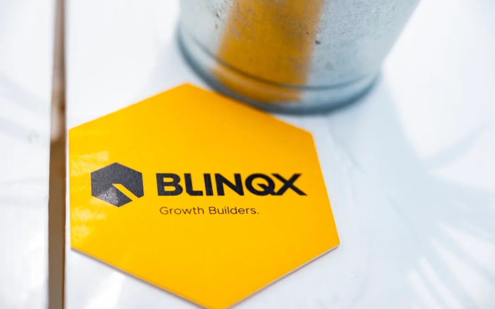

Editie 2026
De woning en de hypotheek. Eén verhaal.
Aankoop- en verkoopbegeleiding, woningwaarde en het complete woningaanbod — naast je financieel advies, in dezelfde omgeving.
Vier oplossingen, één klantreis.
Elke makelaar krijgt de financieringsvraag op zijn bureau, en elke adviseur zit tegenover mensen die al aan het zoeken zijn. eBlinqx Makelaardij & Woondiensten sluit die twee werelden aan elkaar.
Objecten, relaties en dossiers in één systeem, voor een vast en laag maandbedrag. Publiceren naar 20+ kanalen, nieuwbouw- en projectbeheer, digitaal ondertekenen met Wwft- en UBO-checks.
Realtime NVM-woningaanbod, zoekprofielen en e-mailalerts in jouw huisstijl. Met aan- en verkoopdossier, Wwft-check en digitaal ondertekenen — en jouw logo bij elke alert.
Geautomatiseerde woningwaarderapporten met de actuele waarde van een woning. De sterkste gespreksopener die er is — voor verhuizen, oversluiten én verduurzamen.
De rekentools van de Hypotheekbond op de site van de makelaar: maximale hypotheek, maandlasten, kan ik deze woning kopen, en het duurzaamheidsprofiel van de woning.
Het CRM voor de professionele makelaar.
Uitgebreide software voor een vast en laag maandbedrag, zonder dat je vastzit aan functies die je niet gebruikt. Van startende zzp-makelaar tot kantoor met meerdere vestigingen en toegangsniveaus.
Alles op één plek, met overzichten, templates, exports en je eigen bedrijfsstijl inclusief logo en handtekening.
Funda en Funda in Business, Huislijn, Pararius, Huispedia, Ventu, Woningbond, MijnHuiszaken en je eigen site — in één keer publiceren, intrekken of afmelden.
Projecten van A tot Z beheren met Gateway Nieuwbouw, bouwnummerstatus, optanten en automatische dossier- en sleutelnummers.
Huurcomplexen bijhouden, ruimtes onder optie of verhuurd, en uitponden naar de markt.
Koop- en huurcontracten altijd volgens de laatste regels, digitaal getekend, plus een opleveringsapp voor nieuwe huurders.
Potentiële kopers en huurders controleren met volledig geïntegreerde Wwft- en UBO-checks.
Beeld, plattegronden en presentatiemateriaal beheren en publiceren vanuit hetzelfde systeem.
Je kantoor op Makelaarsbond.nl en je aanbod gratis op Woningbond.nl.
In beeld vanaf dag één.
Wie een woning zoekt, kijkt elke dag. Die aandacht wil je niet aan een portal afstaan. Met MijnHuiszaken zoekt je klant in jouw omgeving — en jij weet als eerste wanneer er iets in beweging komt.
Het complete aanbod van NVM-makelaars, afgestemd op het zoekprofiel van je klant. Een geverifieerde zoekopdracht die geen woningzoeker wil missen.
Uitnodigen via een button op je site, een link in een e-mail of gewoon aan tafel. Jouw logo en contactgegevens staan in de omgeving en in elke alert.
Weet vóór de markt uit wie er in beweging komt, en waar je klant precies naar zoekt.
Je klant ziet de geschatte waarde van zijn woning en hoeveel mensen naar zo'n woning zoeken. Wil hij verhuizen, dan weet jij het eerst.
Begeleiding bij aan- en verkoop, met Wwft-check en digitaal ondertekenen inbegrepen.
Een geautomatiseerd rapport met de actuele waarde — als opener, als onderbouwing bij verkoop en als aanleiding voor een oversluitgesprek.
Bind je lead tijdens de oriëntatie en stel je advies zeker.
Werk digitaal samen met je zoeker, van eerste alert tot bod.
Laat zien hoeveel kopers er zijn voor precies deze woning.
Aangesloten op de hele keten.
Onafhankelijk getoetst informatiebeveiligingsbeleid.
Aantoonbare beheersing van onze processen.
Hosting binnen Nederland en Europa.
De financiering van de woning die je klant net gevonden heeft.
Weet het wanneer de woning van je relatie te koop staat.
Van websitebezoeker naar afspraak op kantoor.
Eén klantbeeld voor het hele kantoor, over alle producten heen.
Klein beginnen, snel live.
Je activeert zelf welke extra functionaliteiten je gebruikt. Zo start je laagdrempelig en groei je mee.
"Overzichtelijk en betrouwbaar pakket, makkelijk om mee te werken. Handige koppelingen en extra's, en support van vakbekwame medewerkers."

Kantoren die het al doen.
Van eenmanszaak tot internationaal kantoor, en van woningmakelaar tot vastgoedbeheerder. Wat ze delen: één systeem waarin objecten, relaties en publicatie samenkomen.
"Overzichtelijk en betrouwbaar pakket, makkelijk om mee te werken. Handige koppelingen en extra's, support van vakbekwame medewerkers."
"Als internationale makelaar zijn wij groot voorstander van werken in de cloud. Het werkt op alle apparaten die wij gebruiken, ook de iPad."
"Bedankt weer voor jullie supersnelle mega service. Voor ons niets anders meer."
Kantoren die hypotheek en makelaardij combineren, houden de klant van eerste zoekopdracht tot passeren in eigen huis.
Makelaardij en hypotheek, één fundament.
Hullenbergweg 109
1101 CL Amsterdam
E jeroen@oversteegen.nl
verzekeringhypotheek.blinqx.tech